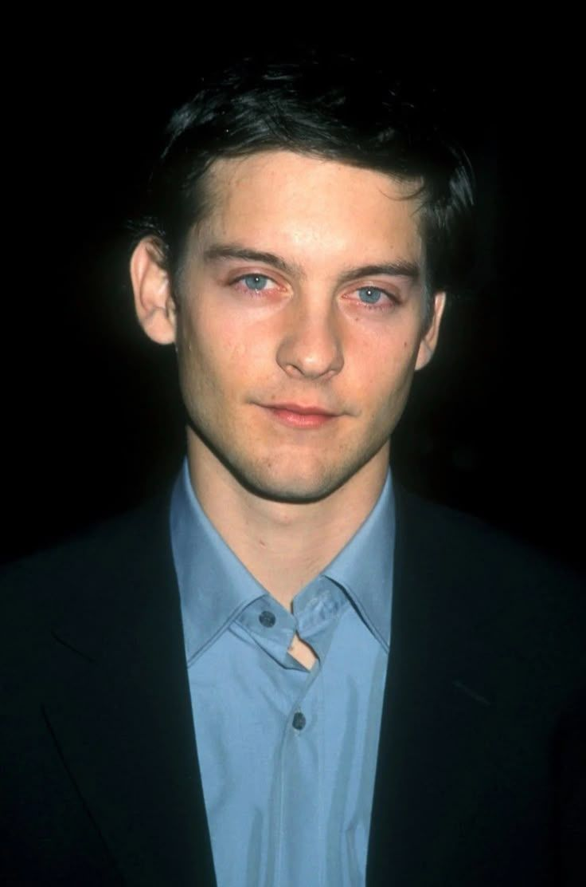

Elenco Principal



Dirigido por Sam Raimi e lançado em 2002, "Homem-Aranha" foi um marco no cinema de super-heróis. Com Tobey Maguire no papel principal, o filme capturou perfeitamente a essência do herói amigo da vizinhança, equilibrando ação emocionante com um coração genuíno.
Peter Parker (Tobey Maguire) é um estudante do ensino médio que vive com seus tios, Ben (Cliff Robertson) e May (Rosemary Harris), desde que seus pais faleceram. Peter tem dificuldade em se relacionar com seus colegas, com exceção de sua paixão de longa data, Mary Jane Watson (Kirsten Dunst), e seu melhor amigo, Harry Osborn (James Franco).
Durante uma visita a um laboratório genético, Peter é picado por uma aranha geneticamente modificada e começa a desenvolver poderes sobre-humanos, incluindo a capacidade de escalar paredes e lançar teias.
Após a trágica morte de seu tio Ben, Peter decide usar seus poderes para combater o crime, adotando a identidade do Homem-Aranha. Enquanto isso, o empresário Norman Osborn (Willem Dafoe), pai de Harry, realiza um experimento perigoso em si mesmo que o transforma no Duende Verde, um vilão perigoso que ameaça a cidade de Nova York.
"Homem-Aranha" arrecadou US$ 114 milhões em sua primeira semana de estreia, batendo o recorde de maior estreia da história na época.
O filme foi pioneiro no uso de CGI para criar as cenas de balanço do Homem-Aranha, estabelecendo um novo padrão para filmes de super-heróis.
A cena do beijo de cabeça para baixo entre Peter e Mary Jane se tornou um dos momentos mais icônicos da história do cinema.
A frase "Com grandes poderes vêm grandes responsabilidades", dita pelo Tio Ben, se tornou um dos lemas mais conhecidos dos quadrinhos.